Skip the overnight preparation cycle.
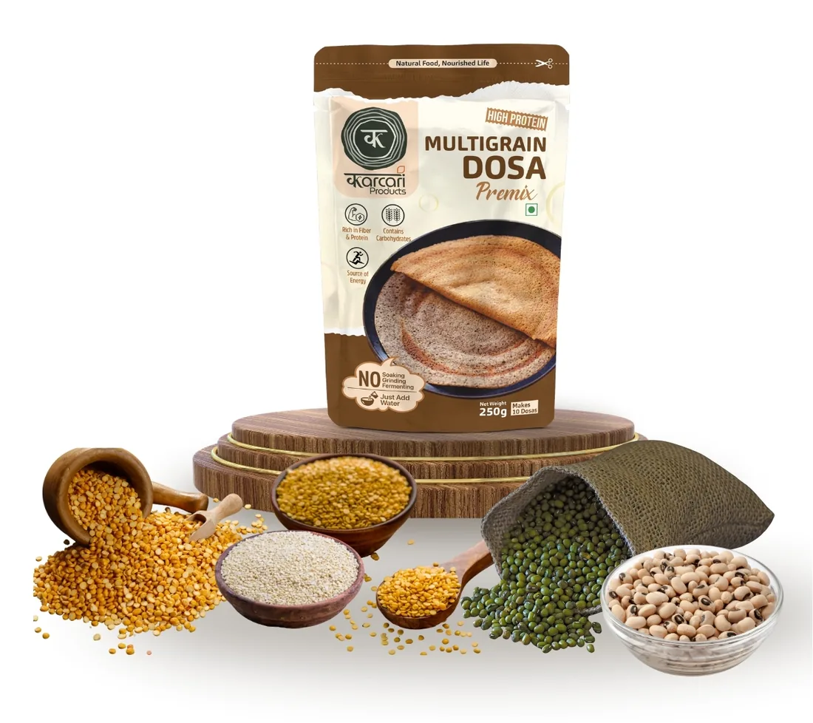
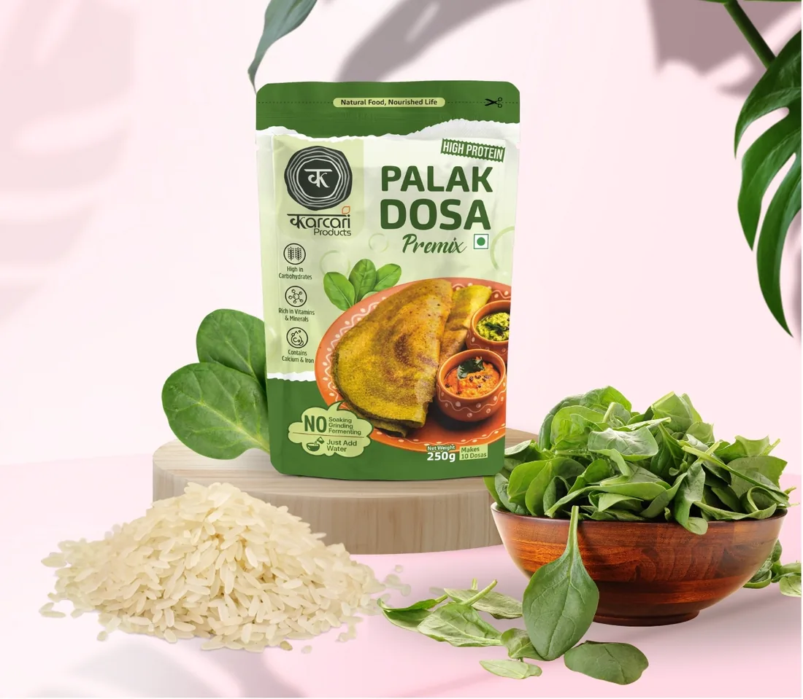
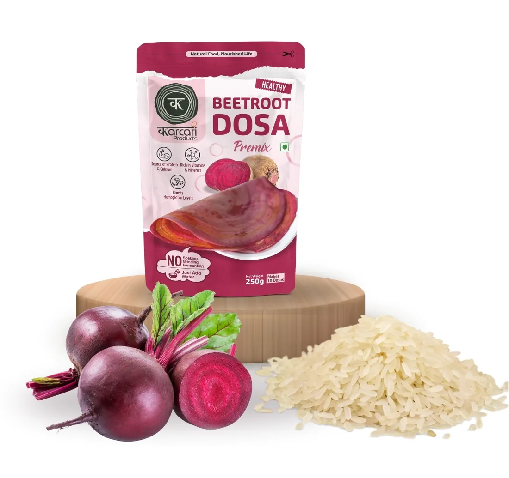
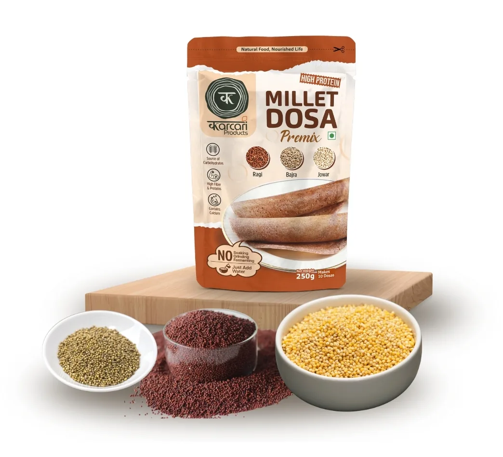
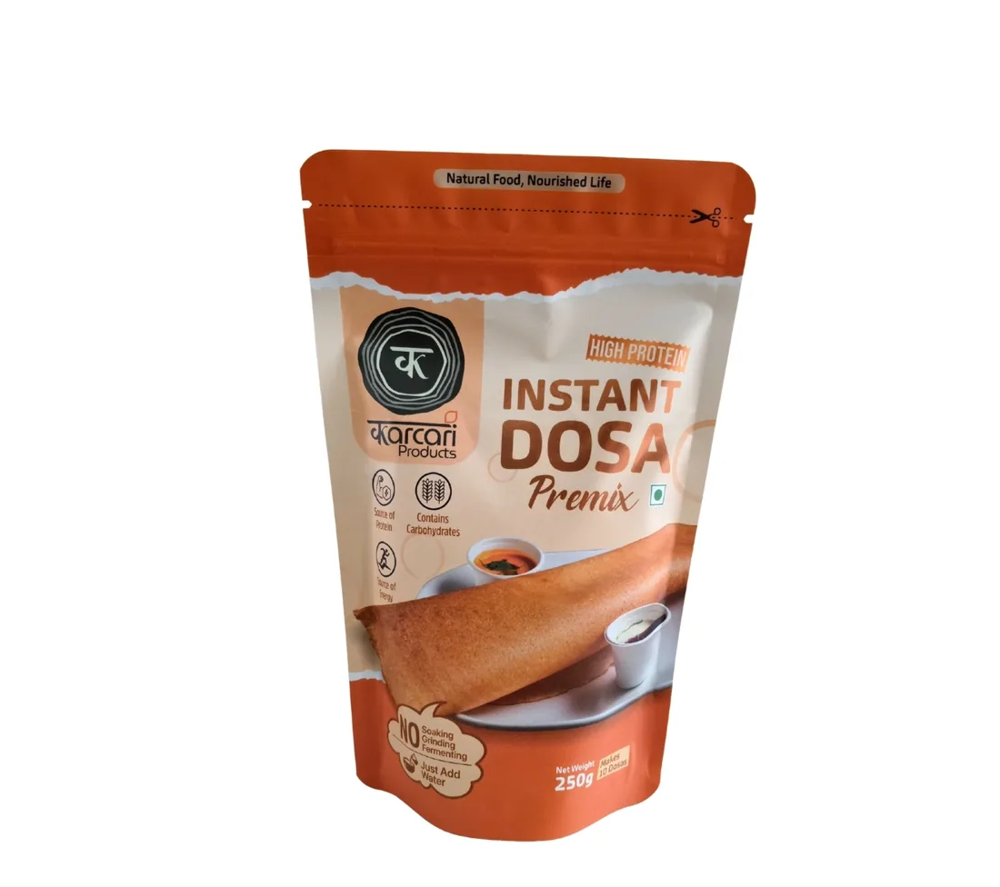
Karcari Morning System01 / 05
Grain Mode
Mornings move fast.
Breakfast can keep up.
More grain. Zero overnight prep.
A fuller, grain-rich dosa mix made for mornings that need nourishment without the soaking and grinding ritual.
SOAKING00GRINDING00ROUTINE3 STEPS
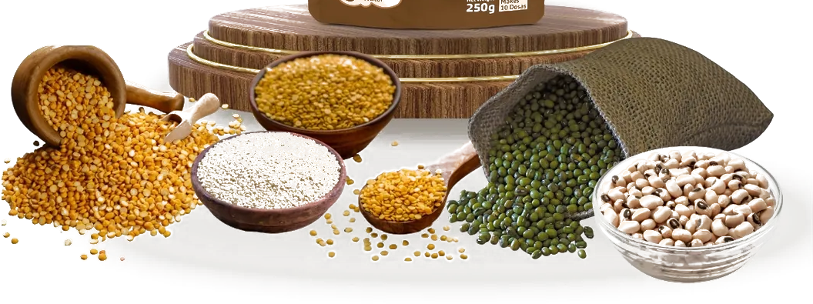
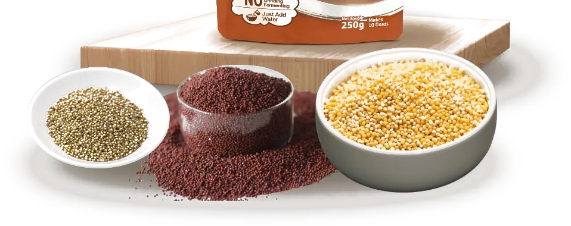
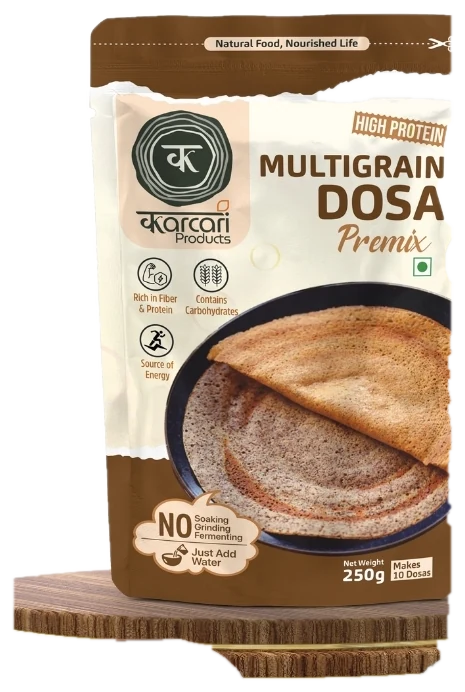
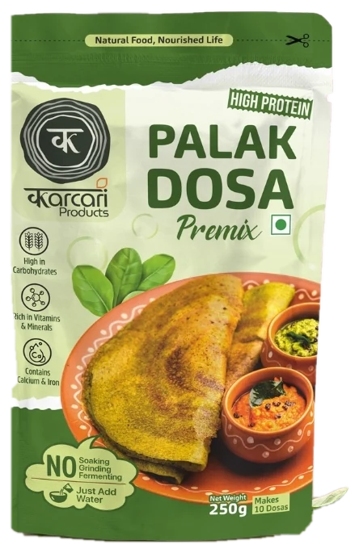
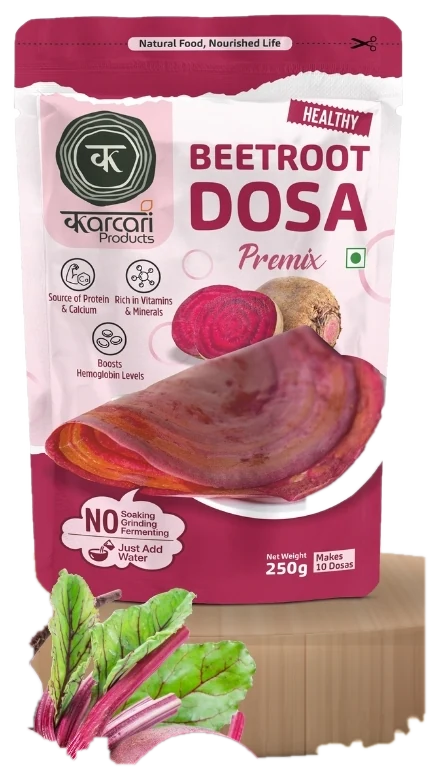
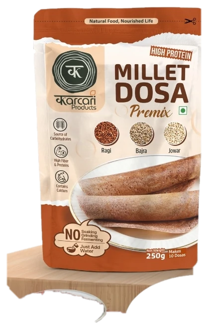
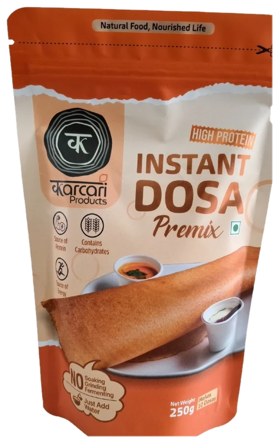
Multigrain DosaReady-to-cook breakfast mix
Choose your morning
Move straight from pack to batter.
A familiar breakfast in a simpler routine.
Why Karcari exists
Traditional breakfast should not demand a traditional schedule.
Karcari translates familiar Indian food into dependable ready-to-cook formats—so convenience does not have to feel disconnected from culture, nourishment or taste.
Meet the consumer collectionPREPARATION REMOVEDSOAK + GRIND
What premium means here
Premium is not how loudly a brand announces itself.
It is how carefully every detail removes friction, builds confidence and delivers a result people want to repeat.
INGREDIENT INTENT
A product story people can understand.
Each variant begins with a clear ingredient idea—from multigrain and millet to palak and beetroot.
ROUTINE DESIGN
Convenience that solves a real morning problem.
No decorative complexity: the value is visible in fewer steps, easier preparation and a familiar format.
REPEATABLE EXPERIENCE
A result designed to earn the next purchase.
Premium is the confidence that the pack, preparation and final plate will feel considered every time.
The Karcari Pantry
Five ways to change the morning.
Select any product below. Each card opens its own exact page on Karcari.in for retail ordering and payment.
01
Grain Mode
Multigrain Dosa
A fuller, grain-rich dosa mix made for mornings that need nourishment without the soaking and grinding ritual.
Shop exact product
02
Green Mode
Palak Dosa
A vibrant palak-led dosa mix that brings a fresh visual identity to the familiar crisp breakfast format.
Shop exact product
03
Colour Mode
Beetroot Dosa
A beetroot-led breakfast mix that turns an everyday dosa into a vivid, memorable plate without complicating the routine.
Shop exact product
04
Ancient Grain Mode
Millet Dosa
Millet-based nourishment translated into a modern ready-to-cook format for households that value tradition and time equally.
Shop exact product
05
Classic Mode
Instant Dosa
The familiar breakfast people already love, redesigned for days when preparation time is the rarest ingredient.
Shop exact productThe Ingredient Studio
From harvest to production line.
Dehydrated powders and flakes for manufacturers, health brands, commercial kitchens, distributors and private-label partners.
Enquire about all products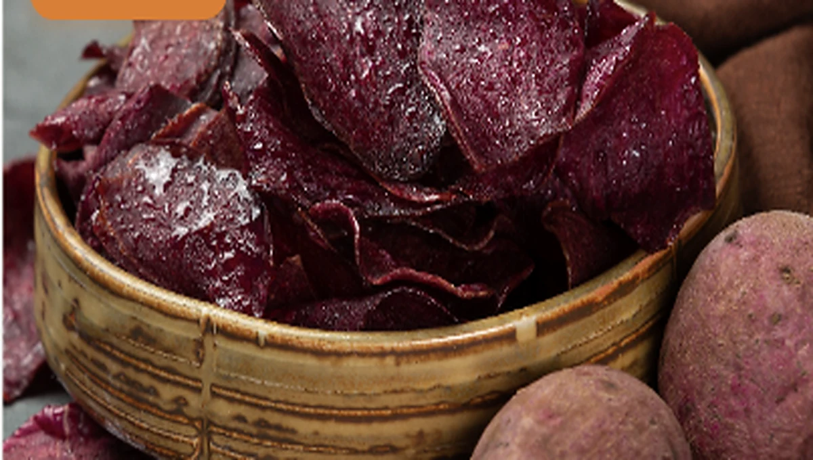
Best Seller
Dehydrated Vegetable
Beetroot Powder / Flakes
Rich in natural colour and nutrients — ideal for food processing, health products, beverages, natural colouring, and premium culinary applications.
Natural ColorantAntioxidant-Rich80–100 Mesh
Enquire now
Clean Label
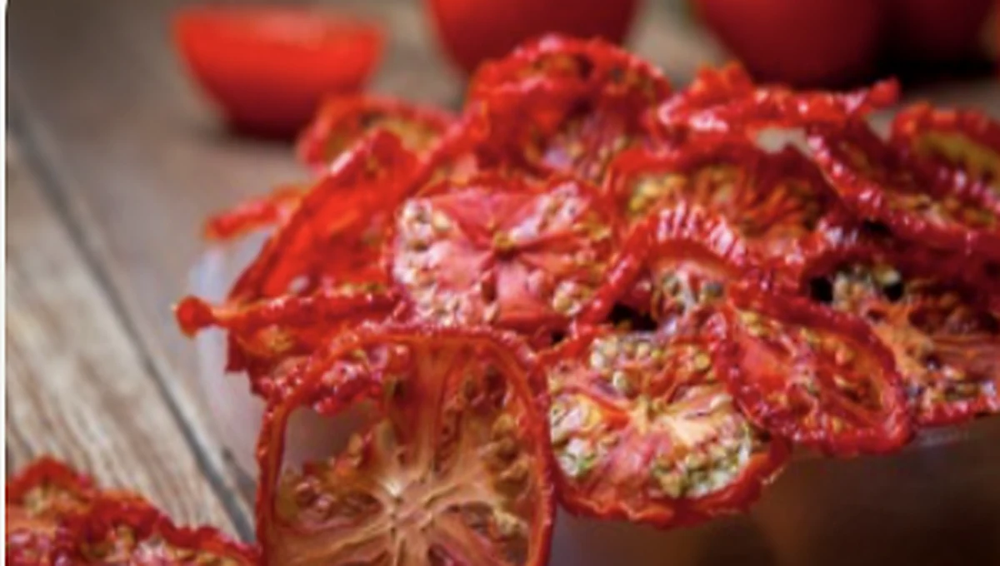
Natural Colorant
Dehydrated Vegetable
Tomato Powder / Flakes
Made from premium sun-ripened tomatoes — perfect for sauces, seasonings, soups, snacks, and large-scale food manufacturing applications.
Vibrant Red60–100 MeshNo Additives
Enquire now
Premium Grade
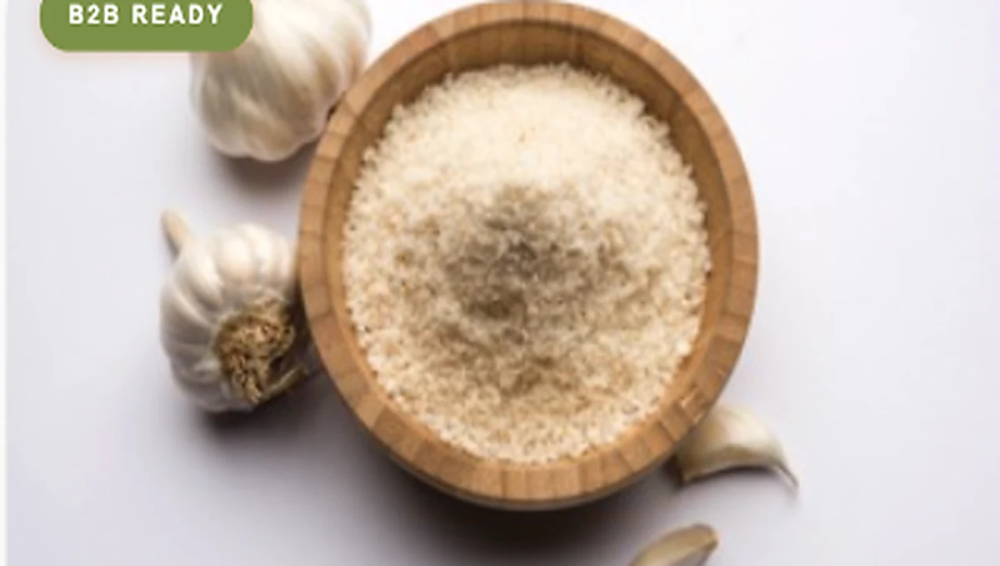
B2B Ready
Dehydrated Spice
Garlic Powder / Flakes
Strong aroma and authentic flavour — widely used in spice blends, ready-to-cook products, seasonings, and large-scale food industry applications.
Intense AromaBulk Supply60–80 Mesh
Enquire now
Pure Extract
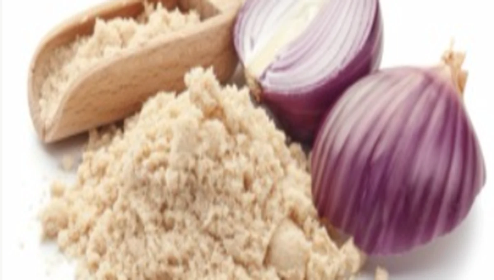
High Demand
Dehydrated Vegetable
Onion Powder / Flakes
Convenient ingredient offering natural onion taste — ideal for seasonings, processed foods, instant mixes, and high-volume commercial kitchen use.
Natural TasteLong Shelf LifeIndustrial Grade
Enquire now
No Fillers
Trending
Dehydrated Herb
Mint Powder / Flakes
Refreshing aroma and natural flavour — perfect for seasonings, beverages, chutneys, confectionery, and versatile food preparations.
RefreshingHerb GradeFood Safe
Enquire now
Pure Herb
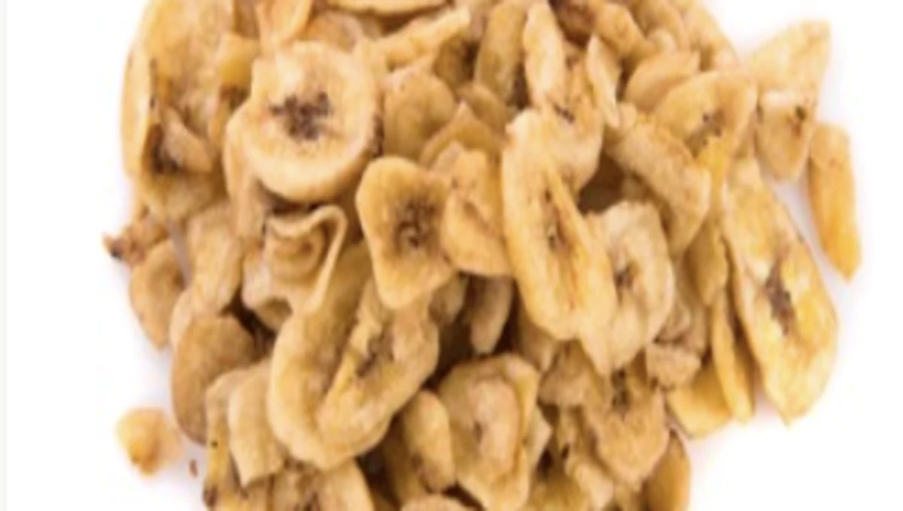
Versatile
Dehydrated Fruit
Banana Powder / Flakes
Nutritious and versatile — used in baby foods, bakery products, health foods, protein mixes, and snack manufacturing applications.
Baby Food GradeBakery UseHigh Nutrition
Enquire now
Nutrient Dense
KARCARI
Built for business conversations
One portfolio.
Multiple commercial possibilities.
01
Distribution
Bring Karcari consumer products to new markets and retail networks.
Start conversation 02Institutional supply
Discuss food-service, hospitality, corporate and high-volume requirements.
Start conversation 03Private label
Explore product-development and manufacturing conversations for your brand.
Start conversationAll business enquiriesconnect@karcari.com